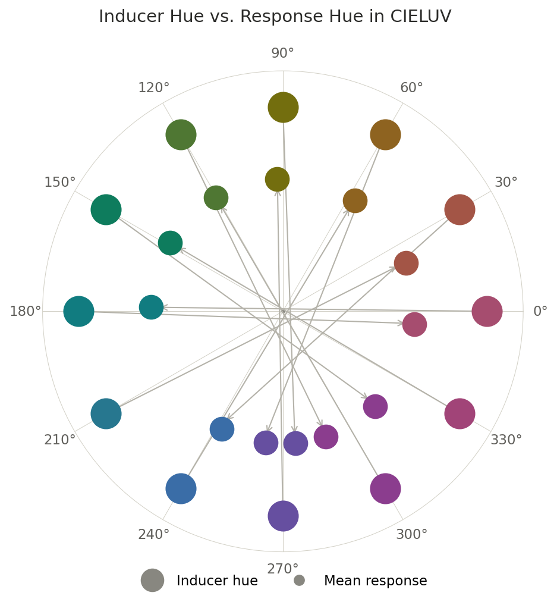
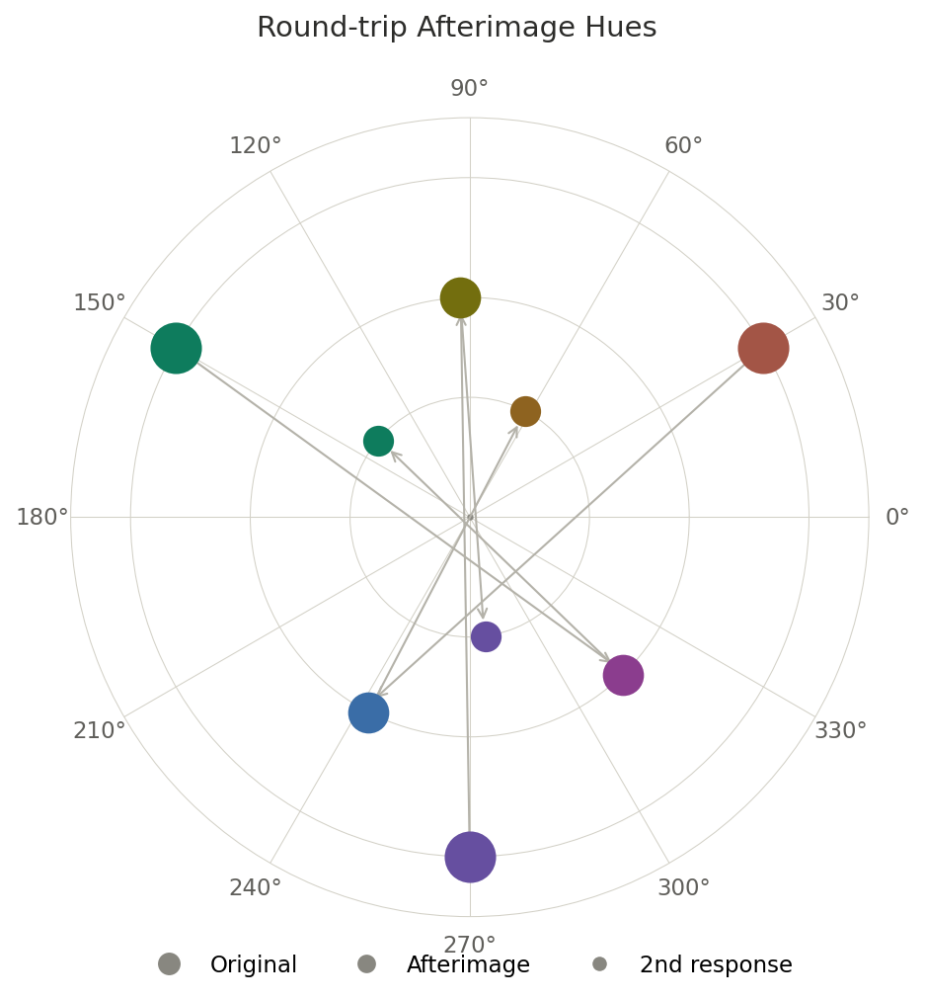
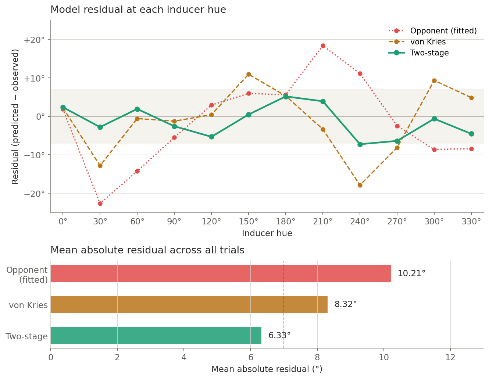
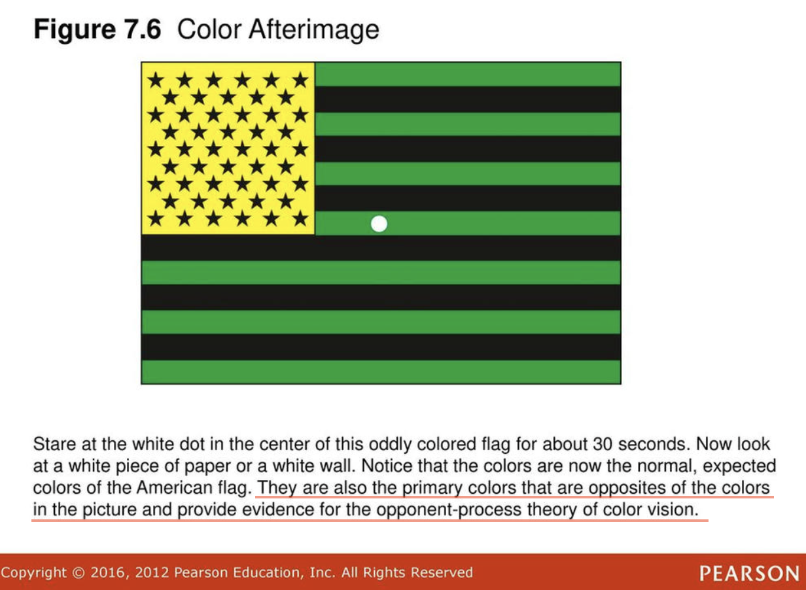

Afterimages and Their True Colors
This is a personal implementation and extension on Christoph Witzel's work, The non-opponent nature of colour afterimages (2025).
Afterimages are commonly understood to be color inversions caused by opponent channel adaptation, resulting in a red-green and blue-yellow inversion. This experiment measures these color relationships empirically, and the results challenge our longstanding assumptions about them.
Background
An afterimage is the visual experience of an image that persists even after it disappears. These are often specified as negative afterimages because their colors appear to "invert" from those of the original image. Demonstrations typically use the four psychological primary colors (red, yellow, green, and blue) to model the standard opponent relationships: red images create green afterimages, blue images create yellow afterimages, and vice versa.
However, I have always noticed that these afterimage color pairs don't seem totally right. For instance, in the US flag afterimage above, the red stripes end up looking a bit pink and the blue rectangle looks more indigo than blue. These pairs are based on Ewald Hering's opponent process theory (red-green, blue-yellow), and are not entirely correct. So what are the correct color pairs we should expect to see in afterimages? Are there even any "pairs" at all?
Based on opponent process theory, two assumptions are commonly made about afterimages:
- The afterimage pairs are red-green and blue-yellow.
- Afterimages are involutions (opposite, inverted, complementary, etc.), meaning that if Color A creates a Color B afterimage, then Color B should create a Color A afterimage.
The lilac chaser demonstration challenges both of these assumptions. Firstly, the expected red-green relationship is clearly wrong: red leaves a cyan afterimage, and green leaves a magenta one. Secondly, while blue does leave a yellow afterimage, yellow's afterimage is notably more indigo, suggesting that this relationship might not be one-to-one.
This prompts me to revisit some important questions about the nature of afterimages:
- What exactly is the color-based relationship between images and their afterimages?
- Do afterimages even involve an "inversion" at all?
- What processes are responsible for the perceived colors in afterimages?
Let's figure this out empirically.
Experiment
The difficulty in studying afterimage colors is that we can't take pictures of afterimages – they don't exist in the real world and can't be "measured" in any physical sense. Instead, we have to do color matching on the computer, where the user perceives an afterimage on the screen and selects a color to match it.
This raises two specific challenges:- Afterimages disappear very quickly. Not only do afterimages fade rapidly, but they also fade immediately, so the color is a moving target.
- It is hard to match colors exactly, especially quickly. Any intuitive color space requires three dimensions (RGB, HSV, etc.), and navigating color spaces is notoriously difficult.
The experiment (demonstrated above) attempts to solve both of these challenges by:
- Using a lilac chaser instead of disappearing images. This allows the afterimage to display continuously, giving the user an arbitrary amount of time to match the color. A small ring rotates around with the afterimage; if the selected color matches, the ring sits flush with the afterimage and just looks like one big dot.
- Controlling for some dimensions of a color space, and only varying the hue. Specifically, the color space is CIELUV (perceptually uniform), with luminance fixed at L*=50 and chroma fixed at C*=39. With a neutral gray background (also L*=50), the afterimage should appear at those same specs, so the user only has to control hue.
Credit to Witzel, C. (2025) for his "chaser-like" paradigm which inspired this design.
The input variable space is 12 evenly spaced hues in CIELUV space at the above specs: hue angles 0°, 30°, 60°, 90°, and so on. I'll use myself as a participant to run 20 trials for each color. After I get the empirically-determined afterimage hues for each input hue, I'll run the experiment again with those hues as inputs, which will help determine whether afterimages relationships are involutions, as discussed earlier.
Results
The experiment is relatively simple, but the results have some significant implications. I would draw two main conclusions based on the results:
- Afterimage colors are not characterized by an inversion of colors.
- Afterimage colors are explained primarily by cone-level adaptation and not opponent-channel adaptation.
On inversions (and involutions)

If afterimages are inversions, then we would expect selected hues to approximate 180° rotations from their inducer hues in a perceptual color space. However, the selected hues deviate from this ideal by 11° on average, with maximum deviations of +33° at hue 30° (orange inducers, where the afterimage rotates farther than 180°) and −16° at hue 150° (green inducers, where it rotates less). For comparison, the within-condition trial-to-trial noise was about 7°, so this bias is meaningfully larger than what random variability could produce. About 77% of the variance in deviation-from-180° is explained by the inducer hue variable, and this bias seems to be systematic: warm hues generally induce a hue rotation greater than 180°, while cool hues induce a rotation less than 180°.

To test for involutions, I re-ran the experiment with the selected afterimage hues as input hues. If afterimages are to be characterized as involutions, then we would expect these input hues to induce afterimages that match the original 12 hues. However, the selected afterimage hues from this experiment are on average 15° off from their original position, about twice the noise floor. Like before, this deviation cannot be explained by noise, and importantly, the same bias (warm hues overshoot, cool hues undershoot) was present here as well.
Ultimately, the data suggest that afterimages involve some process more complex than a simple inversion, and this process certainly cannot be characterized as a reversible involution of hue.
On cone adaptation vs. opponent channel adaptation
Both the cones and opponent channels are responsible for color processing, and both are involved in the experience of afterimages. It is not a question of which layer can explain afterimage hues, but which layer can explain them better. To test this, we will compare the experiment results to the predictions of two models: a von Kries cone adaptation model, and an opponent channel adaptation model. These models simulate gain reduction to their input signals at their respective layers (cones and opponent channels). For the von Kries model, this means adjusting the L, M, and S cones; for the opponent channel model, this means adjusting the red-green and blue-yellow channels. The response of these gain-adjusted cells to neutral-colored light can be simulated to predict the perceived color of afterimages.
Importantly, for this test, I will allow the opponent channel model to fit to the data with two free gain parameters. This is partially based on the physiology that opponent channels adapt to signals differently, and also because without this, the opponent channel model would simply predict a 180° hue flip in CIELUV space, which would give us no new data. It does mean, however, that the opponent channel model has a significant advantage in that it can fit to the data, whereas the von Kries model is naive (no parameters fit). Because of this, the results achieved from this fitted opponent channel model will overestimate its effectiveness in explaining afterimage hues.
Even with its disadvantage, the von Kries cone adaptation model wins. With no free parameters, it produces a mean absolute residual of 8.32°, compared to the fitted opponent channel model's 10.21° (a 1.91° advantage) despite the opponent model being able to fit the data. From this result alone, we could assume that afterimage hue is better explained by cone adaptation.

To further investigate this, we can use both models to create a two-stage model, where adaptation is modeled at both the cone layer and opponent channel layer to predict the afterimage hue. In theory, this should be a more realistic model of afterimage color perception, and could provide insight as to how much each stage of adaptation contributes to the effect.
This two-stage model leads to a mean absolute residual of 6.33°, a significant improvement from either standalone model, and notably close to the 7° noise floor of the experiment itself, suggesting it approaches the limit of what these data can resolve. What appears to happen is that cone adaptation gets the direction of the afterimage roughly right, but the cone prediction is too extreme along the red-green axis and not extreme enough along the yellow-blue axis. Opponent channel adaptation then refines the prediction by compressing red-green (gain ≈ 0.82) and stretching blue-yellow (gain ≈ 1.20). As a whole, the two-stage model suggests that cone adaptation explains about ⅔ of the variance whereas opponent channel adaptation explains about ⅓. So while these results do suggest that both layers play significant roles in determining afterimage hue, it does indicate that cone adaptation accounts for this effect twice as much as opponent channel adaptation.
Discussion & Recap
Regarding the original questions, what do these results suggest about afterimages?
What exactly is the color-based relationship between images and their afterimages? Do afterimages even involve an inversion at all? Afterimage hues are approximated by inversions in perceptual color spaces, but they are fundamentally not inversions nor involutions, nor do they appear to follow any clean algorithmic relationship between hues. They instead are best predicted by gain reduction of signals in the cones and opponent channels, and even then are only approximations subject to error.
What processes are responsible for the perceived colors in afterimages? The results from this experiment suggest that afterimage hues are the result of adaptation in both cones and opponent channels, and likely further downstream processes as well. However, cone adaptation appears to account for about ⅔ of the effect, twice as much as opponent channel adaptation.
There are certainly some limitations to mention, including but not limited to:
- Only one participant (myself). Unique hues and adaptation gains are known to vary by 5-10° between individuals, which is comparable to some of the residuals I found. The specific quantitative results might shift in a multi-subject study.
- Imperfect variables (my eyes, my monitor display, my ambient lighting, etc.).
- Not too many trials (only 20 per hue, 5 per hue for second part).
- Very hard to guarantee that afterimages be L*=50 and C*=39, making it hard to match hue.
- Scope is limited to L*=50 and C*=39, a very small subset of CIELUV color space.
All of these limitations should be resolved in a proper experiment, but the results would still have been very unlikely if not for the explained effects. The scope could certainly be increased to include the effects of other colors and background luminances, but these settings are sufficient to provide interesting enough results for now.

These results contrast with the way afterimages are taught, demonstrated, and described, at least in my experience. I learned about afterimages several times in school from third grade all the way through college, and several themes would come up that seem incongruent with the findings of this experiment:
- Afterimage hues exemplify the red-green and blue-yellow opponent pairs (demonstrably not true).
- Afterimages invert inducer colors, revealing "opponent" or complementary colors (approximately true in perceptual color spaces, but not corroborated by any algorithmic process).
- Afterimages occur due to opponent channel adaptation (true, but it's mostly explained by cone adaptation).
- Afterimages are evidence/motivation for opponent process theory (not really; Hering's original arguments rested on color appearance phenomena, not on afterimages. The findings from this experiment further emphasize that afterimages do not provide evidence for opponent process theory.)
All in all, I feel that the popular understanding of afterimages is rather misleading. Even though the scientific community has challenged opponent process theory over the years and currently points to cone adaptation as the primary explanation for afterimages, opponent channel explanations are still widespread. I myself was surprised by the experiment results after having heard these explanations so many times.
In any case, while there is a long way to go before we fully decode human vision, it is exciting to see how even a simple experiment like this can challenge some of our longstanding assumptions about color!
Supplementary materials and notes
Link to experiment: [experiment.html]
Link to my experiment results data: [data.csv]
Link to code for analysis: [stats.py]